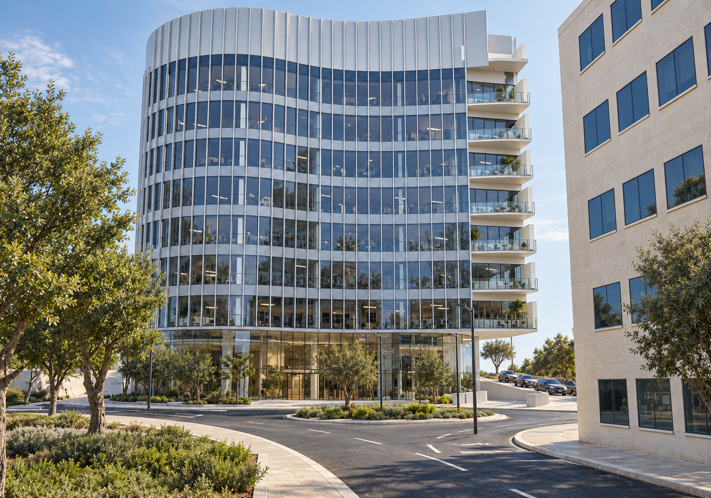
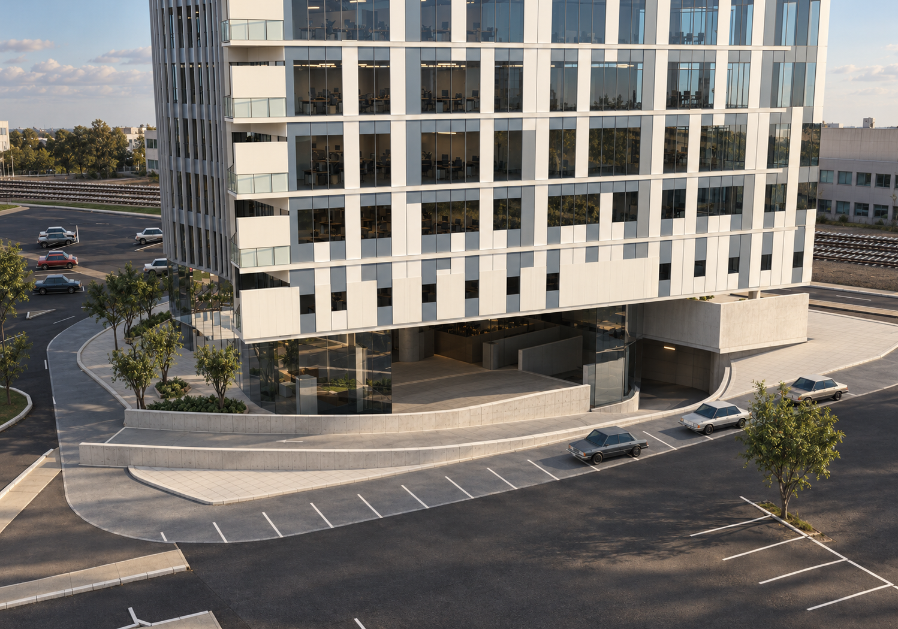
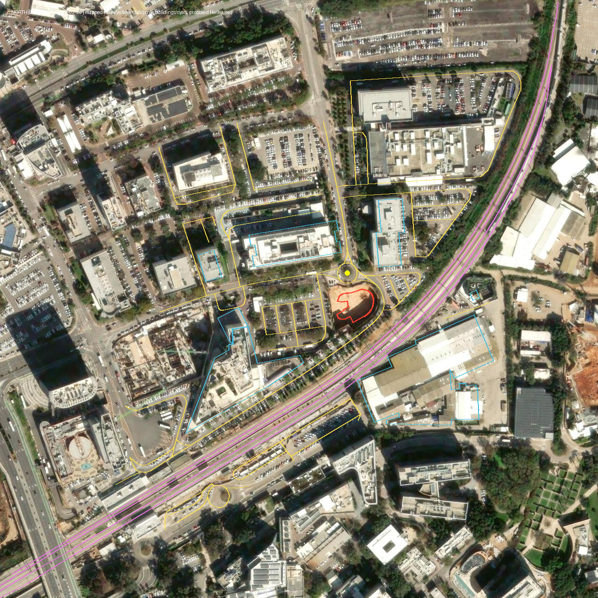
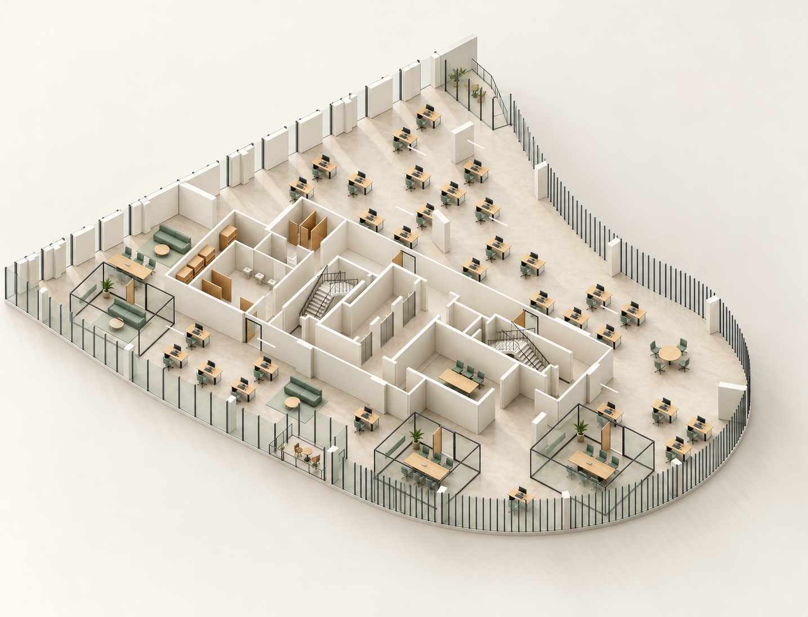
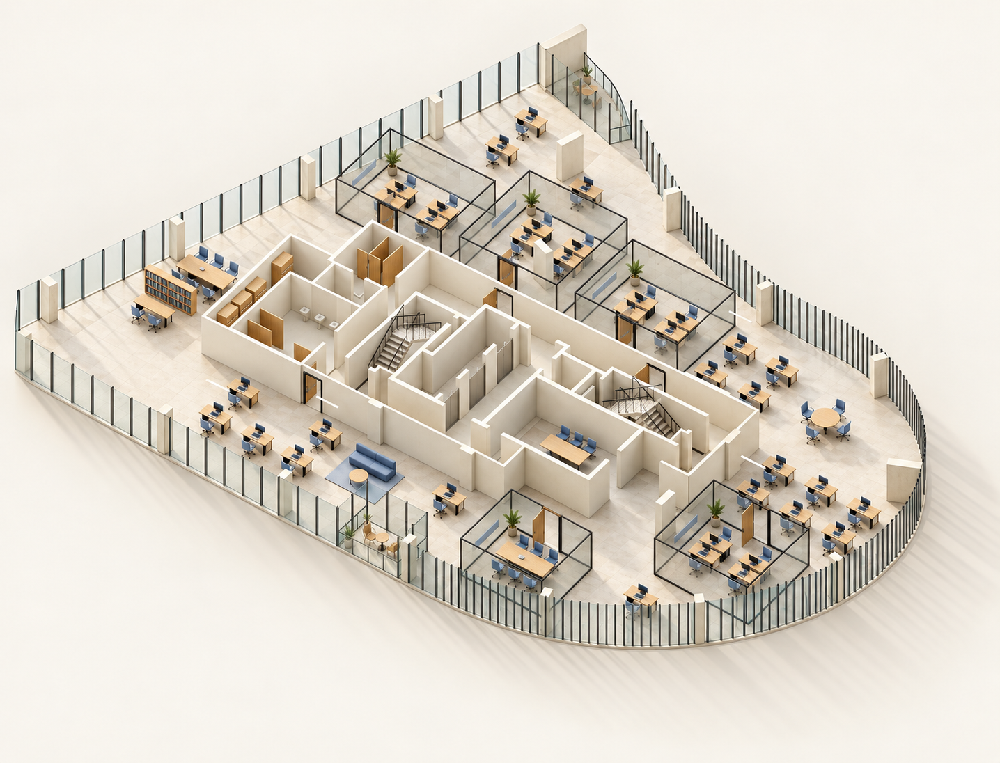
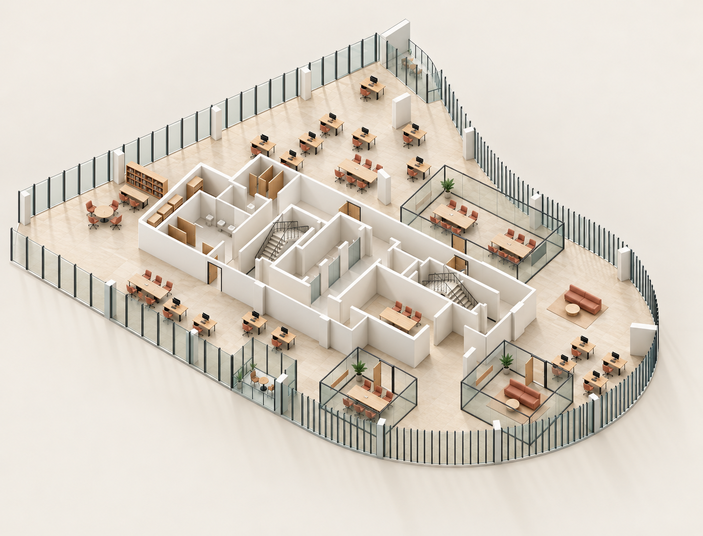
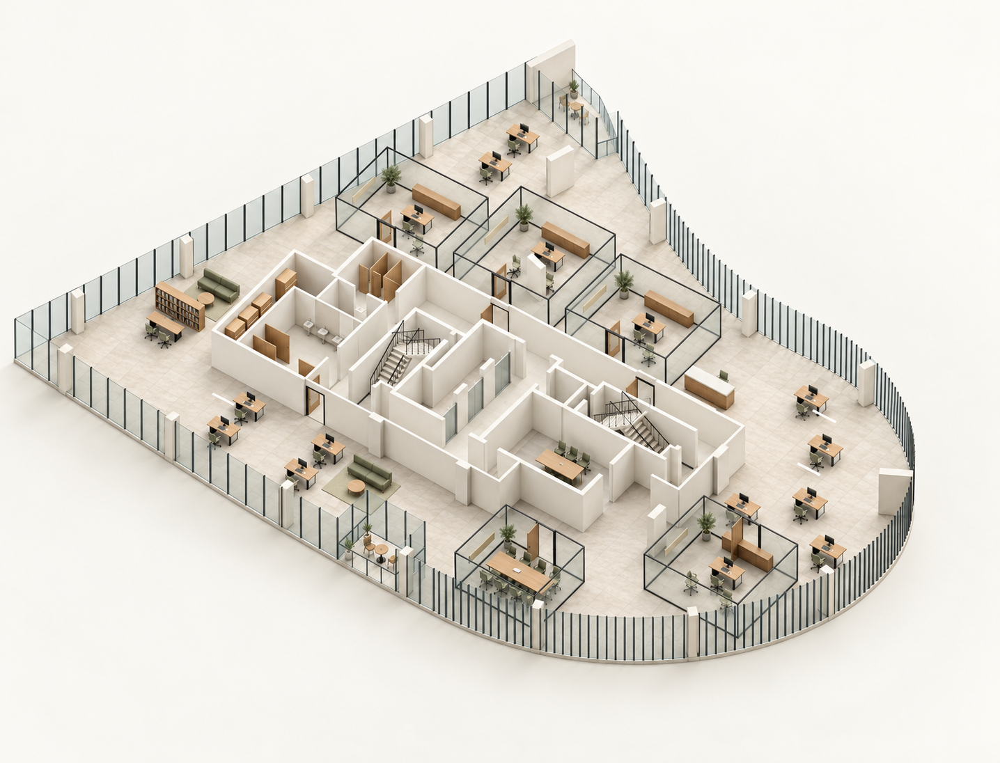
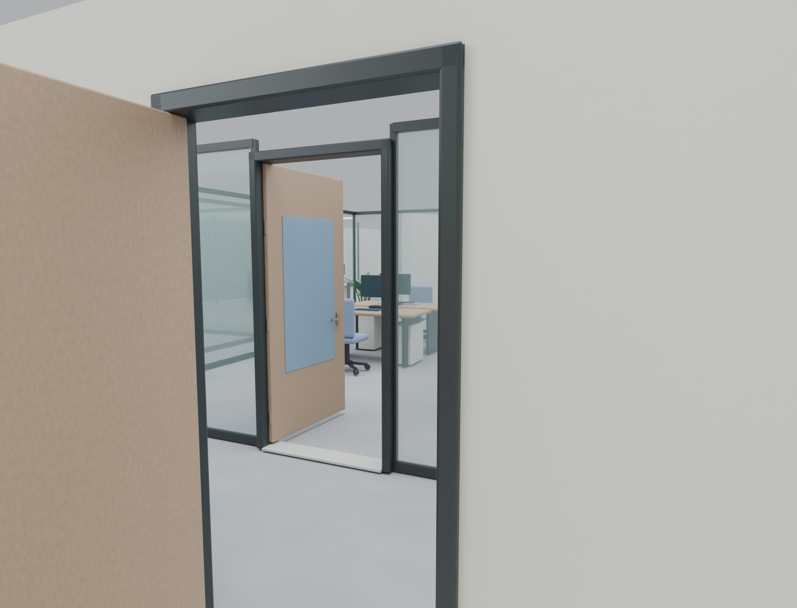

רחובות · פארק המדע
הבניין, בתוך המקום שלו.
סביבה שנבנתה ממקורות, שבע קומות עם אופי שונה, וכניסות מחברות מהמסדרונות למשרדים.
סביבה שנבנתה ממקורות, שבע קומות עם אופי שונה, וכניסות מחברות מהמסדרונות למשרדים.
הכיכר, הכבישים, החניונים, שבעה מבנים שכנים וארבע מסילות הוצבו לפי המפה ותצלום האוויר. הפיתוח במגרש והירידה לחניון נשענים על תוכניות הפרויקט.


תצלום Esri / Vantor מ־26.02.2025 מציג את המגרש בזמן חפירה. עליו נבדקה ההתאמה למפה ולתכסית הבניין המתוכנן. הפיתוח העתידי במגרש נלקח מתוכניות SITE-016 / SITE-019 משנת 2026.

מקורות: Esri World Imagery / Vantor; נתוני מפה © OpenStreetMap contributors. גובה וגמרי השכנים, צמחייה וריהוט רחוב הם השלמה חזותית. הרישום מיועד להמחשה ואינו מדידה סקרית.
הגרעין, המעטפת ופתחי הכניסה נשמרים לפי התוכניות. בתוך המסגרת הזו, חלוקות השוכרים מציעות דרכי עבודה שונות. התמונות הן המחשות AI; כל פריסה קיימת גם במודל שאפשר לסובב.




נוספו שלוש כניסות מהמסדרונות בכל קומת משרדים, עם פתחים ממשיים, משקופים, כנפיים וידיות. בחתכי קומה ברירת המחדל היא קירות מלאים; במדרגות, מעליות וחדרי מכונות החשיפה משתנה עם הסיבוב.

הגרסה המשולבת עברה ביקורת מסירה עצמאית, בדיקות גאומטריה ובדיקת דפדפן במחשב ובמסך צר. מקורות הבניין והתוכניות המקוריים נשמרו.